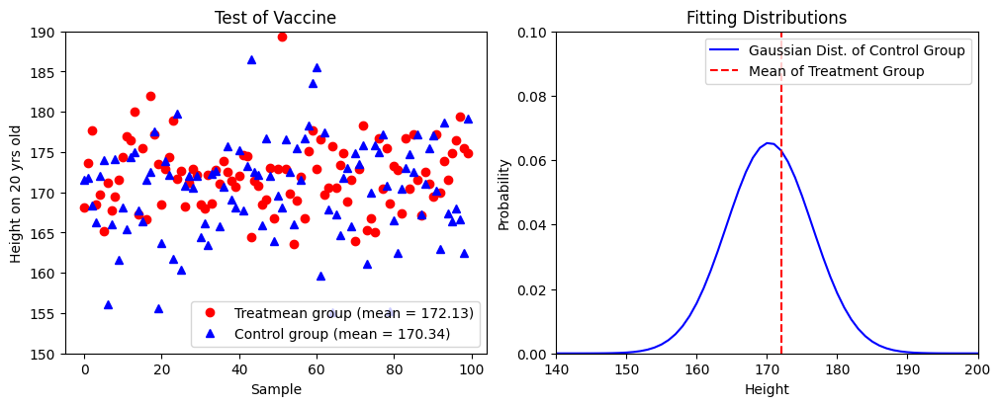
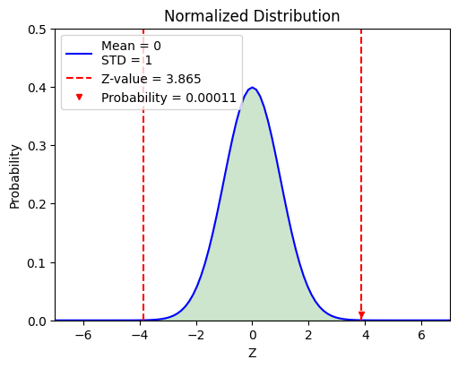
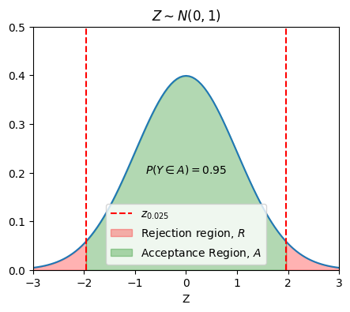
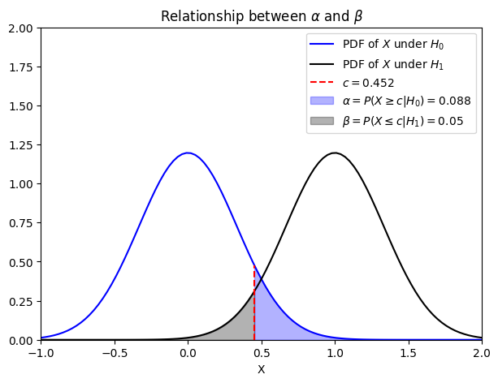
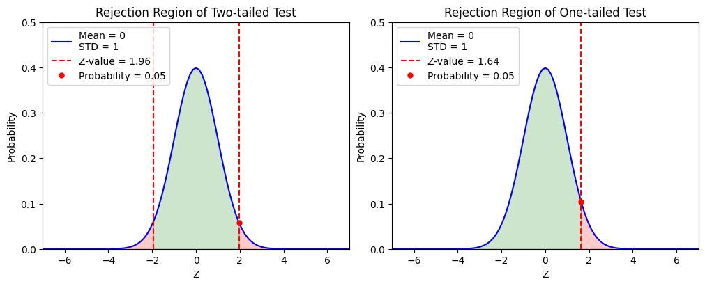
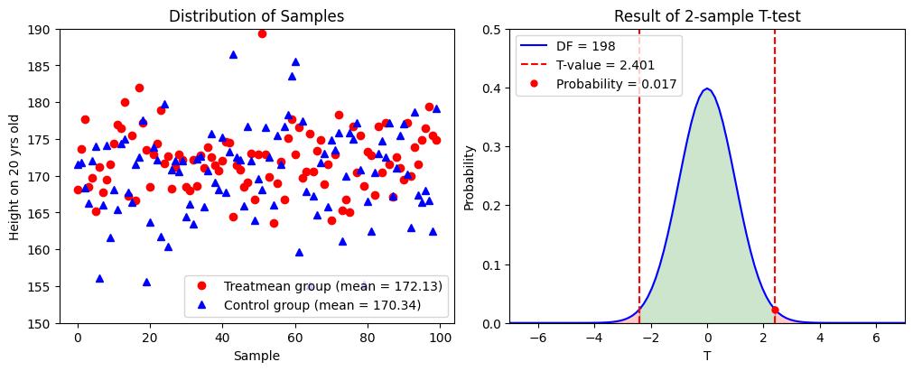

Randomized Trials and Hypothesis Checking#
Last Time#
Point Estimation
Maximum Likelihood Estimation
Interval Estimation
Interval Estimation with Known Variance
Interval Estimation with Unknown Variance
Confidence Interval for Normal Samples
Today#
Introduction#
Once upon a time…
這個世界的某處，在一個亞熱帶的島嶼上有著一個國家，上面住著大概兩千萬左右的南方島國子民，一直以來過著呼呼嘿嘿安安穩穩的日子，直到近80年前的某一天，基於人道考量，他們接納了從島嶼西方那塊大陸湧入的上百萬難民，伴隨著他們而來的是一個名為吃人夠夠的病毒，這個病毒會抑制身體的生長激素，導致這個南方島國子民下一代的平均身高下降了15cm，來到了170cm，讓他們在跟其他民族交流的時候都得抬頭90度仰望對方，一直以來都讓這個國家的執政者非常地困擾。
某一天，這個國家的領導人與政府機構突然收到了一項資訊，某位科學家宣稱，只要讓小朋友在青春期的時候，注射三劑他所開發的特殊疫苗，就可以有效抑制吃人夠夠病毒、促進身體成長、使身材變得更加高大，並附上對應的第三期臨床實驗結果。請問，如果你是這個國家的領導階層，你該怎麼判斷這個科學家提供之實驗結果是具有統計意義的呢？
Randomized Trial of 吃人夠夠 Vaccine#
The scientist persuaded 200 teenagers who lived in this southern island country to participate in his randomized trial of 吃人夠夠 vaccine. The scientist then divided them randomly into two groups: treatment and control.
Each member of treatment group received 3 doses of 吃人夠夠 vaccination. Members of the control group were told that they were being given 3 doses of 吃人夠夠 vaccination, but were instead given 3 doses of normal saline. By the time that these 200 teenagers were 20 years old, the scientist measured their body height and got this result.

The scientist is elated about the result of his clinical trial, which shows that the mean body height of the treatment group is \(172.83\) cm, and that of the control group is \(170.24\) cm. However, a statistician points out that it was almost inevitable that one of the two groups would have a higher mean than the other, and perhaps the difference in means is merely a random occurrence. So, how does the scientist check the statistical significance of her/his trial?
Review: Central Limit Theorem#
Given a set of sufficiently large samples drawn from the same population, the sample means will be approximately normally distributed.

This normal distribution will have a mean close to the means of the population.
The variance of the sample means will be close to the variance of the population divided by the sample size.
Check The Probability#
We can check that,
What is the probability of the sample mean (mean of treatment group) within the range of 95% confidence interval?
What is the probability of the sample mean (mean of treatment group) equal to the population mean (mean of control group)?
import numpy as np
import matplotlib.pyplot as plt
from scripts.basicFuncs import gaussDist, calProb
data = np.load("./data/example1.npz")
treatmentHeights, controlHeights = data["treatmentHeights"], data["controlHeights"]
mTreat, sTreat = np.mean(treatmentHeights), np.std(treatmentHeights)
mControl, sControl = np.mean(controlHeights), np.std(controlHeights)
print("Control Group, (Mean, STD) = ({:.02f}, {:.02f})".format(mControl, sControl))
print("Treatment Group, (Mean, STD) = ({:.02f}, {:.02f})".format(mTreat, sTreat))
fig = plt.figure(figsize=(10,4), dpi=100, layout="constrained", facecolor="w")
ax1 = fig.add_subplot(121)
ax1.plot(treatmentHeights, 'ro', label="Treatmean group (mean = {:.02f})".format(mTreat))
ax1.plot(controlHeights, 'b^', label="Control group (mean = {:.02f})".format(mControl))
ax1.set_title("Test of Vaccine")
ax1.set_xlabel("Sample")
ax1.set_ylabel("Height on 20 yrs old")
ax1.set_ylim([150, 190])
ax1.legend(loc="best")
x = np.linspace(100, 200, 101)
ax2 = fig.add_subplot(122)
ax2.plot(x, gaussDist(x, mu=mControl, sigma=sControl), 'b', label="Gaussian Dist. of Control Group")
ax2.vlines(mTreat, ymin=0, ymax=0.1, colors='r', linestyles='dashed', label="Mean of Treatment Group")
ax2.set_title("Fitting Distributions")
ax2.set_xlabel("Height")
ax2.set_ylabel("Probability")
ax2.set_xlim([140, 200])
ax2.set_ylim([0, 0.1])
ax2.legend(loc="best")
plt.show()
Control Group, (Mean, STD) = (170.34, 6.10)
Treatment Group, (Mean, STD) = (172.13, 4.16)

As a result, we found that,
It is difficult to analyze this if we directly check the position of treatment group in the probability density function of control group.
How do we do this with reasonable approach?
Check the Difference#
In this case, what we want to check is whether the sample mean
is equal to a target value \(\mu_0\) or not, i.e., \(\bar{X} = \mu_0\) or \(\bar{X} \neq \mu_0\).
Therefore, a more appropriate approach is to check this based on the probability of this difference value occurring. For convenience, we define a new random variable \(Z\) as followed
where the random variable \(Z\) follows a standard normal distribution \(Z \sim N(0, 1)\).
Result of Checking the Difference#
By calculating the \(z\)-value (standard score), we have
By substituting this result into a normal distribution with \(\mu = 0\) and \(\sigma = 1\), we can get the probability of getting a sample mean \(\bar{X}\) that is equal to \(172.13\) cm from \(N(0, 1)\) is about \(0.00011\).

Therefore, we can conclude that it is nearly impossible to get \(100\) samples with \(172.13\) sample mean from the original population. We can also claim that the 吃人夠夠 vaccine does have statistical significance.
from scripts.testFuncs import test1
test1(target=170, pVar=5.5)
z-value = 3.865
Probability = 0.00011

Brief Summary#
What have we learned in this example?
Start a randomized trial for 吃人夠夠 vaccine and we have the data from the treatment and control groups.
We assume that the mean height of treatment group should be 170 cm, same as the control group because they are from the same population.
Calculate the \(z\)-value (the standarized difference between sample mean \(\bar{X}\) and target value \(\mu_0\)) and check the probability of getting a mean height that is equal to \(172.13\) cm.
Reject the assumption if that probability is low (\(p = 0.00011\)).
The entire process is known as the "hypothesis checking."
Example 5.1#
We have a coin and we would like to check whether it is fair or not. Let \(\theta\) be the probability of head, \(\theta = P(Head)\). We have two hypotheses:
\(H_0\) (the null hypothesis): \(\theta = \theta_0 = \frac{1}{2}\)
\(H_1\) (the alternative hypothesis): \(\theta \neq \theta_0\), i.e., \(\theta \neq \frac{1}{2}\)
Dr. Wei starts a trial by flipping this coin \(n\) times and getting \(X\) heads. This means that \(X \sim Binomial(n, \theta)\). If \(H_0\) is true, then she knows that \(X\) will be close the \(\frac{n}{2}\). Thus, she defines a threshold \(t\) and
If \(|X - \frac{n}{2}| \leq t\), she accepts \(H_0\).
If \(|X - \frac{n}{2}| \gt t\), she accepts \(H_1\).
The question becomes, how does Dr. Wei define the threshold \(t\)? Intuitively, she would like to avoid a situation that the experimental result tells her accept \(H_1\) while \(H_0\) is true. That is
where the parameter \(\alpha\) is called the level of significance.
If \(n\) is large, by the CLT we have
This result implies that, instead of looking at \(X\) directly, Dr. Wei should focus on \(Y\)
If we define \(\alpha = 0.05\), then
Finally, Dr. Wei concludes that we should accept \(H_0\) if
otherwise reject \(H_0\) and accept \(H_1\).
import numpy as np
import matplotlib.pyplot as plt
from scipy.stats import norm
alpha = 0.05
x = np.linspace(-3, 3, 101)
y = norm.pdf(x)
fig = plt.figure(figsize=(5,4), dpi=100, facecolor="w")
ax = fig.add_subplot(111)
ax.plot(x, y)
ax.vlines(
x=[-1.96, 1.96],
ymin=[0, 0],
ymax=[1, 1],
colors=["r", "r"],
linestyles=["--", "--"],
label=r"$z_{0.025}$"
)
ax.fill_between(
x=np.linspace(np.min(x), -1.96, 10),
y1=np.zeros_like(np.linspace(np.min(x), -1.96, 10)),
y2=norm.pdf(np.linspace(np.min(x), -1.96, 10)),
color="r",
alpha=0.3,
label=r"Rejection region, $R$",
)
ax.fill_between(
x=np.linspace(1.96, np.max(x), 10),
y1=np.zeros_like(np.linspace(1.96, np.max(x), 10)),
y2=norm.pdf(np.linspace(1.96, np.max(x), 10)),
color="r",
alpha=0.3,
)
ax.fill_between(
x=np.linspace(-1.96, 1.96, 50),
y1=np.zeros_like(np.linspace(-1.96, 1.96, 50)),
y2=norm.pdf(np.linspace(-1.96, 1.96, 50)),
color="g",
alpha=0.3,
label=r"Acceptance Region, $A$",
)
ax.text(
x=0,
y=0.2,
s=r"$P(Y \in A) = 0.95$",
ha="center",
)
ax.set(
xlim=[np.min(x), np.max(x)],
ylim=[0, 0.5],
title=r"$Z \sim N(0, 1)$",
xlabel="Z",
)
ax.legend()
plt.show()

General Setting for Hypothesis Checking#
Let \(X_1 + X_2 + ... + X_n\) be a random sample of interest. A statistic is a real-value function of the data. For example, the sample mean
is a statistic. A test statistic is a statistic based on which we build our test.
State a null hypothesis, \(H_0\) and an alternative hypothesis, \(H_1\). The alternative hypothesis is a hypothesis that can be true only if the null hypothesis is false. To decide whether to choose \(H_0\) or \(H_1\), we choose a test statistic \(W\). We can define the set \(A \in \R\) as the set of possible values of \(W\) for which we would accept \(H_0\). The set \(A\) is called acceptance region, while \(R = \R - A\) is said to be the rejection region.
There are two possible errors that we can make.
\(H_0\) is |
\(H_1\) is |
|
|---|---|---|
Accept \(H_0\) |
X |
Type II Error |
Accept \(H_1\) |
Type I Error |
X |
Type I Error: reject \(H_0\) while \(H_0\) is true.
If \(P \Big( \text{Type I Error} \Big) \leq \alpha\) for all \(\theta \in S_0\), then we say the test has significance level \(\alpha\) or simply the test is a level \(\alpha\) test.
Type II Error: accept \(H_0\) while \(H_0\) is false.
Since the alternative hypothesis \(H_1\) is usually a composite hypothesis (it may include more than one value of \(\theta\)), the probability is usually a function of \(\theta\).
Example 5.2#
Let \(X\) be the received signal. Suppose that we know
where \(W \sim N(0, \sigma^2 = \frac{1}{9})\). We can write \(X = \theta + W\), where \(\theta = 0\) if there is no aircraft and \(\theta = 1\) if there is an aircraft. So we define our hypotheses as follows:
\(H_0\) (null hypothesis): no aircraft is present
\(H_1\) (alternative hypothesis): an aircraft is present
Write \(H_0\) and \(H_1\) in terms of possible values of \(\theta\).
Design a level \(0.05\) test (\(\alpha = 0.05\)) to decide between \(H_0\) and \(H_1\).
Find the probability of type II error \(\beta\) for the above test. Note that this is the probability of missing a present aircraft.
If we observe \(X = 0.6\), is there enough evidence to reject \(H_0\) at significance level \(\alpha = 0.01\)?
If we would like the probability of missing a present aircraft to be less than \(5 \%\), what is the smallest significance level that we can achieve?
Solution 5.2.1:
Solution 5.2.2:
Under \(H_0\), \(X = 0 + W \sim N(0, \sigma^2 = \frac{1}{9})\), under \(H_1\), \(X = 1 + W \sim N(1, \sigma^2 = \frac{1}{9})\). If the observed value of \(X\) is less than \(c\), we choose \(H_0\), otherwise we choose \(H_1\).
where \(\Phi (x)\) is the cummulative density function (CDF) of standard normal \(N(0, 1)\).
For a level \(\alpha = 0.05\) test,
Solution 5.2.3:
In this case, \(H_1\) is simple hypothesis (we only have one case: \(\theta = 1\)).
Solution 5.2.4:
For a level \(\alpha = 0.01\) test,
We cannot reject \(H_0\) at significance level \(\alpha = 0.01\).
Solution 5.2.5:
Missing a present aircraft means the type II error. So what we want is \(\beta \leq 0.05\).
In this case (\(c \leq 0.452\)), \(P \Big( \text{Type I Error} \Big) \geq 1 - \Phi (3c) \approx 0.088\). So the smallest significance level we can achieve is \(\alpha = 0.088\). This result also implies that the probabilities of type I error \(\alpha\) and type II error \(\beta\) is a trade-off.
import numpy as np
import matplotlib.pyplot as plt
from scipy.stats import norm
c = 0.452
x = np.linspace(-1, 2, 101)
h0 = norm.pdf(x, loc=0, scale=1/3)
h1 = norm.pdf(x, loc=1, scale=1/3)
fig = plt.figure(figsize=(7,5), dpi=100, facecolor="w")
ax = fig.add_subplot(111)
ax.plot(x, h0, 'b', label=r"PDF of $X$ under $H_0$")
ax.plot(x, h1, 'k', label=r"PDF of $X$ under $H_1$")
ax.vlines(
x=c,
ymin=0,
ymax=norm.pdf(c, loc=0, scale=1/3),
colors="r",
linestyles="--",
label=r"$c = 0.452$"
)
ax.fill_between(
x=np.linspace(c, np.max(x), 50),
y1=np.zeros_like(np.linspace(c, np.max(x), 50)),
y2=norm.pdf(np.linspace(c, np.max(x), 50), loc=0, scale=1/3),
color="b",
alpha=0.3,
label=r"$\alpha = P(X \geq c | H_0) = 0.088$",
)
ax.fill_between(
x=np.linspace(np.min(x), c, 50),
y1=np.zeros_like(np.linspace(np.min(x), c, 50)),
y2=norm.pdf(np.linspace(np.min(x), c, 50), loc=1, scale=1/3),
color="k",
alpha=0.3,
label=r"$\beta = P(X \leq c | H_1) = 0.05$",
)
ax.set(
xlim=[np.min(x), np.max(x)],
ylim=[0, 2],
title=r"Relationship between $\alpha$ and $\beta$",
xlabel="X",
)
ax.legend()
plt.show()

Hypothesis Testing for the Mean#
吃人夠夠 vaccine#
For our randomized trial of 吃人夠夠 vaccine, the null hypothesis would be the mean body height of treatment group is \(170\) cm, and the alternative hypothesis is the mean body height of treatment group is not \(170\) cm.
For our randomized trial of 吃人夠夠 vaccine, what we want to check is the mean body height of treatment group. Therefore, we use the sample mean to define our statistic
If we know the variance of \(X_i\)’s \(\text{Var}(X_i) = \sigma^2\), then we define our test statistic as the normalized sample mean (under \(H_0\): \(\mu = \mu_0\))
If we do not know the variance of \(X_i\)’s
In any case, we will be able to find the distribution of \(W\). This allows us to design our tests by calculating error probabilities.
Example 5.3#
Let \(X_1, X_2, ..., X_n\) be the body height of a random sample from the treatment group, which follows a normal distribution \(N(\mu, \sigma^2)\) (\(\sigma\) is known). Design a level \(\alpha\) test to choose between
We define our test statistic as follows
As we know, our test statistic should be a standard normal distribution under \(H_0\). Therefore, we can define a threshold \(c\). If \(|W| \leq c\), we accept \(H_0\). To choose \(c\), we have
The result shows that we should accept \(H_0\) if
Example 5.4#
Find the probability of type II error \(\beta\) as a function of \(\mu\). Recall that we assume the treatment group follows a normal distribution \(N(\mu, \sigma^2)\).
We know that
If \(X_i \sim N(\mu, \sigma^2)\), the \(\bar{X} \sim N(\mu, \frac{\sigma^2}{n})\)
Example 5.5#
Let \(X_1, X_2, ..., X_n\) be the body height of a random sample from the treatment group, which follows a normal distribution \(N(\mu, \sigma^2)\) where \(\mu\) and \(\sigma\) are unknown. Design a level \(\alpha\) test to choose between
We define our test statistic as follows
The result shows that we should accept \(H_0\) if
Example 5.6#
For our randomized trial of 吃人夠夠 vaccine, the null hypothesis would be the mean body height of treatment group is \(170\) cm, and the alternative hypothesis is the mean body height of treatment group is not \(170\) cm.
Based on the observed data, is there enough evidence to reject \(H_0\) at significance level \(\alpha = 0.05\)?
import numpy as np
from scipy.stats import t
data = np.load("./data/example1.npz")
meanTreat = np.mean(data["treatmentHeights"])
sTreat = np.std(data["treatmentHeights"])
alpha = 0.05
n = len(data["treatmentHeights"])
testStatistic = (meanTreat - 170)/(sTreat/np.sqrt(n))
tValue = t.ppf(q=1-alpha/2, df=n-1)
print("Value of test statistic = {:.3f}".format(testStatistic))
print("t-value = {:.3f}".format(tValue))
if testStatistic > tValue:
print("We should reject the null hypothesis.")
else:
print("We should accept the null hypothesis.")
Value of test statistic = 5.107
t-value = 1.984
We should reject the null hypothesis.
Brief Summary#
Case |
Test Statistic |
Acceptance Region |
|---|---|---|
\(X \sim N(\mu, \sigma^2)\) |
\(W = \frac{\bar{X}-\mu_0}{\sigma/\sqrt{n}}\) |
\( - z_{\frac{\alpha}{2}} \leq W \leq z_{\frac{\alpha}{2}}\) |
\(n\) is large, \(X\) is non-normal |
\(W = \frac{\bar{X}-\mu_0}{S/\sqrt{n}}\) |
\( - z_{\frac{\alpha}{2}} \leq W \leq z_{\frac{\alpha}{2}}\) |
\(X \sim N(\mu, \sigma^2)\), \(\sigma\) unknown |
\(W = \frac{\bar{X}-\mu_0}{S/\sqrt{n}}\) |
\( - t_{\frac{\alpha}{2}, n-1} \leq W \leq t_{\frac{\alpha}{2}, n-1}\) |
One-sided and Two-sided Tests#
In the above examples, we have discussed the case of two-sided test, which means
For a one-sided test like,
We have
Case |
Test Statistic |
Acceptance Region |
|---|---|---|
\(X \sim N(\mu, \sigma^2)\) |
\(W = \frac{\bar{X}-\mu_0}{\sigma/\sqrt{n}}\) |
\( W \leq z_{\alpha}\) |
\(n\) is large, \(X\) is non-normal |
\(W = \frac{\bar{X}-\mu_0}{S/\sqrt{n}}\) |
\( W \leq z_{\alpha}\) |
\(X \sim N(\mu, \sigma^2)\), \(\sigma\) unknown |
\(W = \frac{\bar{X}-\mu_0}{S/\sqrt{n}}\) |
\( W \leq t_{\alpha, n-1}\) |
or
We have
Case |
Test Statistic |
Acceptance Region |
|---|---|---|
\(X \sim N(\mu, \sigma^2)\) |
\(W = \frac{\bar{X}-\mu_0}{\sigma/\sqrt{n}}\) |
\( W \geq -z_{\alpha}\) |
\(n\) is large, \(X\) is non-normal |
\(W = \frac{\bar{X}-\mu_0}{S/\sqrt{n}}\) |
\( W \geq -z_{\alpha}\) |
\(X \sim N(\mu, \sigma^2)\), \(\sigma\) unknown |
\(W = \frac{\bar{X}-\mu_0}{S/\sqrt{n}}\) |
\( W \geq -t_{\alpha, n-1}\) |
import numpy as np
import matplotlib.pyplot as plt
from scripts.basicFuncs import gaussDist, calProb
zValue = 1.96
pValue = calProb(zValue)
fig = plt.figure(figsize=(10,4), dpi=100, layout="constrained", facecolor="w")
x = np.linspace(-7, 7, 101)
x1 = np.linspace(-7, -zValue, 51)
x2 = np.linspace(-zValue, zValue, 51)
x3 = np.linspace(zValue, 7, 51)
ax = fig.add_subplot(121)
ax.plot(x, gaussDist(x), 'b', label="Mean = {}\nSTD = {}".format(0, 1))
ax.vlines([-zValue, zValue], ymin=0, ymax=0.5, colors='r', linestyles='dashed', label="Z-value = {:.02f}".format(zValue))
ax.plot(zValue, gaussDist(zValue), 'ro', markersize=5, label="Probability = {:.02f}".format(pValue))
ax.fill_between(x1, y1=gaussDist(x1), y2=0, color='r', alpha=0.2)
ax.fill_between(x2, y1=gaussDist(x2), y2=0, color='g', alpha=0.2)
ax.fill_between(x3, y1=gaussDist(x3), y2=0, color='r', alpha=0.2)
ax.set_title("Rejection Region of Two-tailed Test")
ax.set_xlabel("Z")
ax.set_ylabel("Probability")
ax.set_xlim([-7, 7])
ax.set_ylim([0, 0.5])
ax.legend(loc=2) # upper left
zValue = 1.64
pValue = calProb(zValue, symmetric=False)
x2 = np.linspace(-7, zValue, 51)
x3 = np.linspace(zValue, 7, 51)
ax2 = fig.add_subplot(122)
ax2.plot(x, gaussDist(x), 'b', label="Mean = {}\nSTD = {}".format(0, 1))
ax2.vlines([zValue], ymin=0, ymax=0.5, colors='r', linestyles='dashed', label="Z-value = {:.02f}".format(zValue))
ax2.plot(zValue, gaussDist(zValue), 'ro', markersize=5, label="Probability = {:.02f}".format(pValue))
ax2.fill_between(x2, y1=gaussDist(x2), y2=0, color='g', alpha=0.2)
ax2.fill_between(x3, y1=gaussDist(x3), y2=0, color='r', alpha=0.2)
ax2.set_title("Rejection Region of One-tailed Test")
ax2.set_xlabel("Z")
ax2.set_ylabel("Probability")
ax2.set_xlim([-7, 7])
ax2.set_ylim([0, 0.5])
ax2.legend(loc=2) # upper left
plt.show()

P-values#
In the above discussions, we only reported an “accept” or a “reject” decision as the conclusion of a hypothesis test. However, we can provide more information using what we call \(P\)-values. In other words, we could indicate how close the decision was. More specifically, suppose we end up rejecting \(H_0\) at at significance level \(\alpha = 0.05\). Then we could ask: “How about if we require significance level \(\alpha = 0.01\)?” Can we still reject \(H_0\)? More specifically, we can ask the following question:
The answer to the above question is called the \(P\)-value.
import numpy as np
from scipy.stats import t, norm
data = np.load("./data/example1.npz")
treatmentHeights, controlHeights = data["treatmentHeights"], data["controlHeights"]
mTreat, sTreat = np.mean(treatmentHeights), np.std(treatmentHeights)
alpha = 0.05
n = len(treatmentHeights)
testStatistic = (mTreat - 170)/(sTreat/np.sqrt(n))
tValue = t.ppf(q=1-alpha, df=n-1)
pValue = 1 - norm.cdf(x=testStatistic)
print("The P-Value of 吃人夠夠 Vaccine = {:.10f}".format(pValue))
The P-Value of 吃人夠夠 Vaccine = 0.0000001638
One-sample and Two-sample Tests#
Thus far in this lecture, we have looked only at one-sample tests, i.e., only the treatment group is taken into consideration during the test.
In general (or in our data), there are treatment and control groups. What we are interesting is whether the difference in means of these two groups is statistically significant or not.
This is known as the two-sample test.
Two-tailed and Two-sample \(t\)-tests#
Let’s assume that the treatment and control groups are independent. Usually we have several situations. Here we only discuss these 2:
The sample sizes are equal (\(𝑛_1 = 𝑛_2 = N\)) and these two distributions have the same variance (\(s_1 = s_2 = s\)).
The sample sizes are unequal and these two distributions have the similar variance (\(\frac{1}{2} \lt \frac{s_1}{s_2} \lt 2\)).
Clearly, the trial of 吃人夠夠 vaccine is the second one.

According to the result of two-tailed two-sample \(t\)-test, we are going to reject the null hypothesis and accept the alternative hypothesis with confidence \(98.3 \%\).
from scripts.testFuncs import test6
test6()
t-value = 2.401
Probability = 0.017

# Scipy results
from scripts.testFuncs import test7
test7()
1-sample T-statistic = 5.081270655581135
1-sample p-value = 1.770143341225191e-06
TtestResult(statistic=5.081270655581135, pvalue=1.770143341225191e-06, df=99)
2-sample T-statistic = 2.4014790438801255
2-sample p-value = 0.01737771481892233
TtestResult(statistic=2.4014790438801255, pvalue=0.01737771481892233, df=174.75813798695754)
Summary#
The flowchart of hypothesis checking:
Have data.
Do you know the parameters of population? Go \(t\)-test if unknown.
State the null hypothesis \(𝐻_0\) and alternative hypothesis \(𝐻_𝑎\) (one-tailed or two-tailed? one-sample or two-sample?). Set a confidence threshold \(\alpha\).
Calculate the standard score (\(z\)-value or \(t\)-value) of the test statistic.
Claim that we can reject the null hypothesis with confidence \(\alpha\) if the standard score is in the rejection region and accept the alternative hypothesis with confidence \(1 − \alpha\).